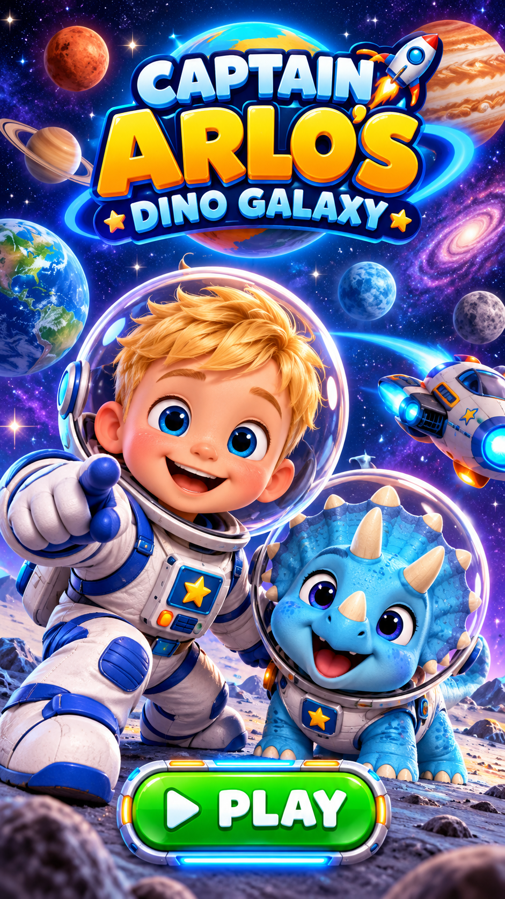
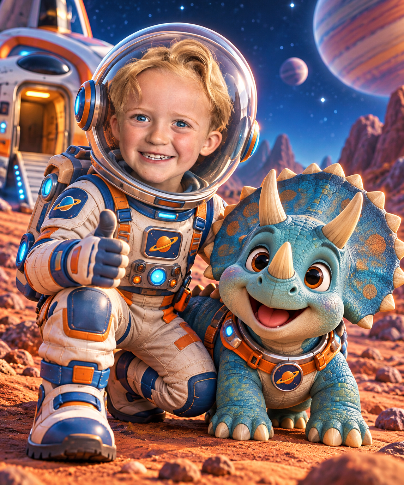
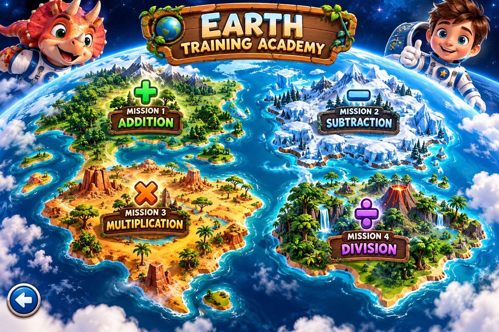
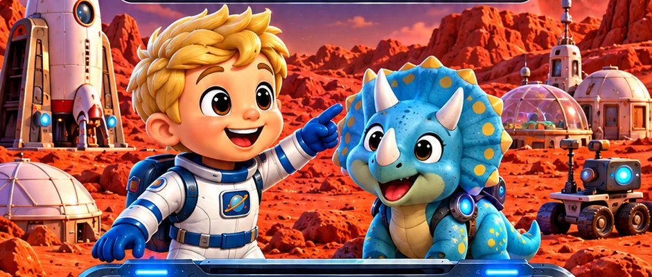

Your dinosaur buddy is ready for a mathematical space adventure.
🦖 Press START WITH TILLY to hear her introduction, then launch!
Tap a floating planet to explore! Earth is ready for your maths adventures.

Tap any of the four Martian continents to start a word search!

Find all six words! Drag across the letters — some go across and some go down!
Four spaceships • Four gentle fraction adventures
Type your answer on the space tablet.